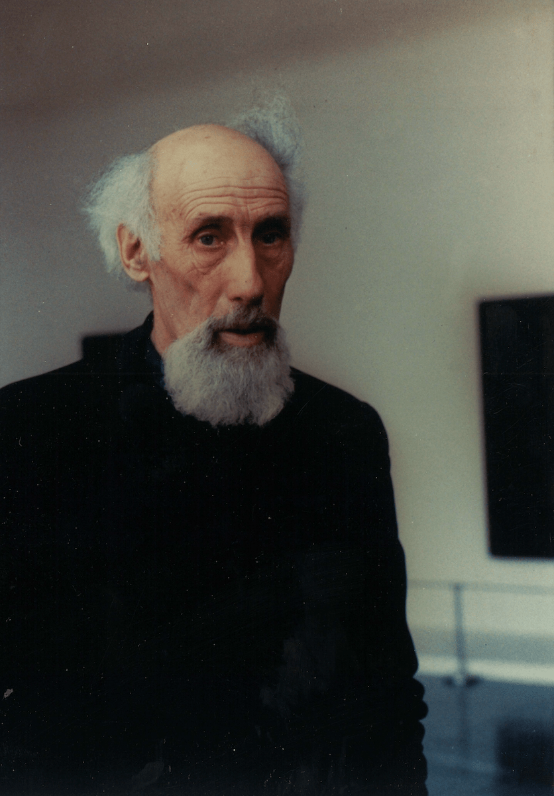

i lift
one stone
and i am
thinking
[Robert Lax – new poems, 1962]
Thanks to the permission from the "“Robert Lax Literary Trust” I am incredibly happy to announce that I have officially started to work on a new, long-term project, consisting of a series of sound actions / performances revolving around the beauty of Robert Lax's poems.
News, list of partners / supporters and more insights on the project will be shared through my webpage and social networks.
Robert's portrait has been taken at Stattsgalerie in Stuttgart, in 1985, by ©Judith Emery.